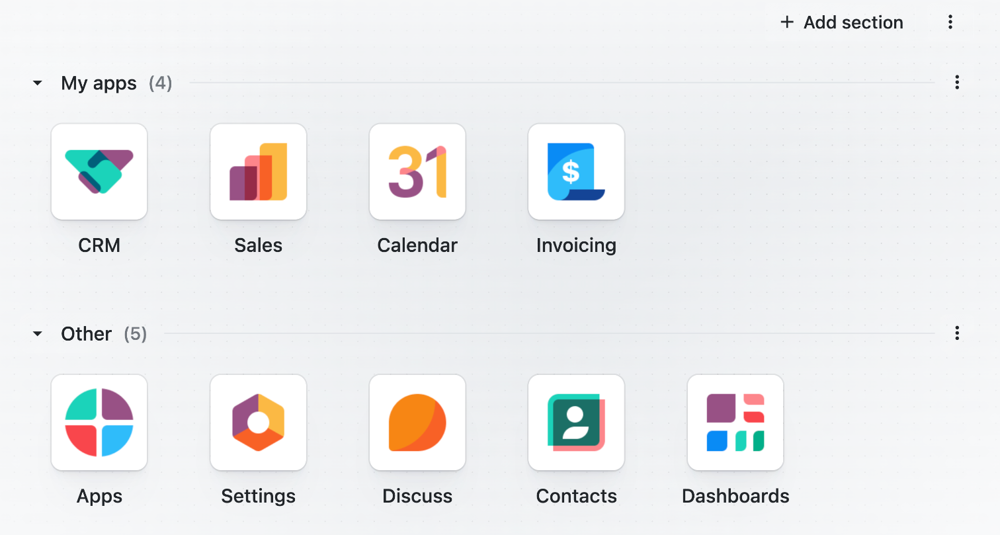
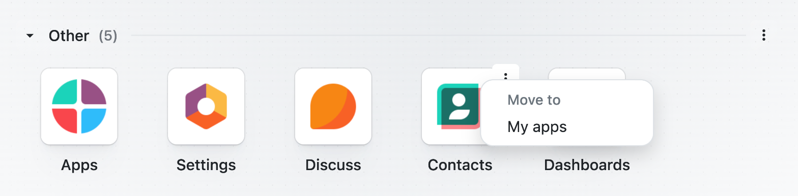
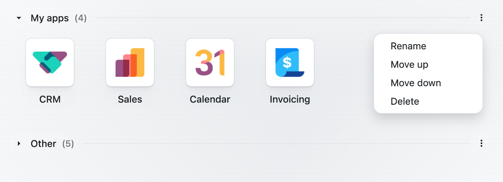

Organize your home menu into collapsible sections.
When many apps are installed, the home menu becomes one long wall of icons. App Sections lets every user group those icons into named, collapsible sections: keep daily apps on top, tuck the rest away, and find everything faster. It changes presentation only, never permissions, and each user has their own layout.



English Polski
Each user sees the interface in their own language.